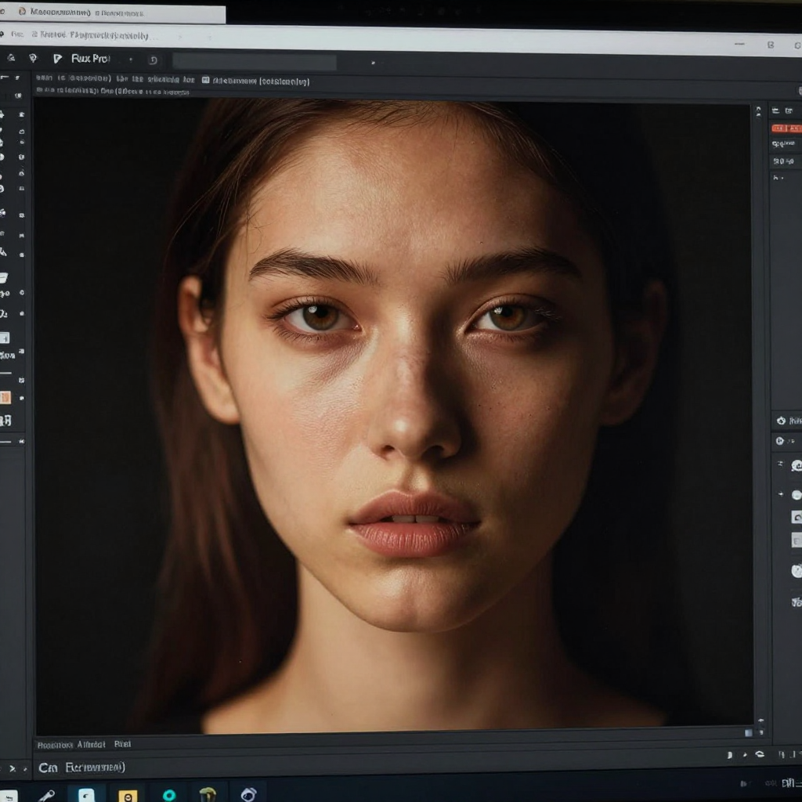

Flux Pro Review (2026): The Best AI for Photorealistic Images?
📅 Last Updated: March 29, 2026

📋 Table of Contents
What Is Flux Pro?
Flux Pro by Black Forest Labs has quickly become the go-to AI image generator for photorealistic results. Created by the original Stable Diffusion team, Flux Pro combines cutting-edge architecture with exceptional prompt understanding.
Key Features
- Photorealism: The most photorealistic AI images available
- Prompt Adherence: Excellent at following complex descriptions
- Text Rendering: Good text in images capability
- Multiple Models: Flux Pro, Flux Dev, and Flux Schnell (fast)
- API Access: Easy integration for developers
Performance
Photorealism: Flux Pro produces the most convincing photorealistic images we have seen. Skin textures, lighting, and environmental details are remarkably natural. Score: 10/10
Artistic Style: While excellent at realism, Flux Pro also handles artistic styles well, though Midjourney still edges it for creative/artistic output. Score: 8.5/10
Speed: Flux Schnell is very fast (under 2 seconds). Flux Pro takes longer but delivers higher quality. Score: 8/10
Pros
- Best photorealistic image quality
- Excellent prompt following
- Multiple model options for speed vs quality
- Created by Stable Diffusion founders
- Strong API and integration options
Cons
- No free tier for Pro model
- Less community than Midjourney
- Requires API access or third-party platforms
- Not as artistic/creative as Midjourney
Flux Pro vs Midjourney vs DALL-E 3
| Feature | Flux Pro | Midjourney | DALL-E 3 |
|---|---|---|---|
| Photorealism | 10/10 | 8.5/10 | 8/10 |
| Artistic Quality | 8.5/10 | 10/10 | 7.5/10 |
| Prompt Accuracy | 9/10 | 8/10 | 9.5/10 |
| Text in Images | 7.5/10 | 6/10 | 9/10 |
| Price | Pay-per-image | $10/mo+ | $20/mo (ChatGPT) |
Final Verdict
Flux Pro is the best AI image generator for photorealistic results. If you need images that look like real photographs, Flux Pro is unmatched. For artistic and creative work, Midjourney remains our top pick. 4.6 out of 5 stars.
🎁 Free AI Tools Guide 2026
Download our free guide with 50+ AI tool comparisons, pricing, and recommendations.
Download Free Guide →📖 Related Articles
Pros & Cons at a Glance
Flux Pro API
✅ Pros
• Top-tier quality
• Fast generation
• Commercial rights
❌ Cons
• $0.05/image starting
• API only
• No free tier
Flux Dev (Open)
✅ Pros
• Free open-source model
• Highly customizable
• Community support
❌ Cons
• Requires technical setup
• Needs powerful GPU
• Less polished than Pro
Flux Schnell
✅ Pros
• Ultra-fast generation
• Free tier available
• Good for rapid iteration
❌ Cons
• Lower quality than Pro
• Limited detail
• Fewer styles
Image Quality
✅ Pros
• Photorealistic output
• Great text rendering
• Strong composition
❌ Cons
• Newer ecosystem
• Limited integrations
• Community still growing
Pricing Model
✅ Pros
• Pay-per-image
• No subscription needed
• Scales with usage
❌ Cons
• Costs add up at scale
• No flat-rate option
• API dependency
Frequently Asked Questions
What is Flux Pro?
Flux Pro by Black Forest Labs is a high-quality AI image generator known for exceptional photorealism, prompt accuracy, and text rendering. It was created by the original Stable Diffusion team.
Is Flux Pro better than Midjourney?
Flux Pro excels at photorealistic images and following complex prompts precisely. Midjourney has a more distinctive artistic style and better community/ecosystem. Both are excellent depending on your aesthetic preferences.
How much does Flux Pro cost?
Flux Pro is available through API pricing or platforms like Fal.ai and Replicate. Costs range from $0.03-0.06 per image. It does not have a monthly subscription like Midjourney.
Can I use Flux Pro for free?
Flux Schnell (the fast version) is available for free through some platforms. Flux Pro (the highest quality version) requires paid API access. Grok (X/Twitter) includes Flux for generating images.
What makes Flux Pro different?
Flux Pro stands out for superior text rendering in images, excellent photorealistic quality, strong prompt adherence, and diverse output styles from the same team that created Stable Diffusion.